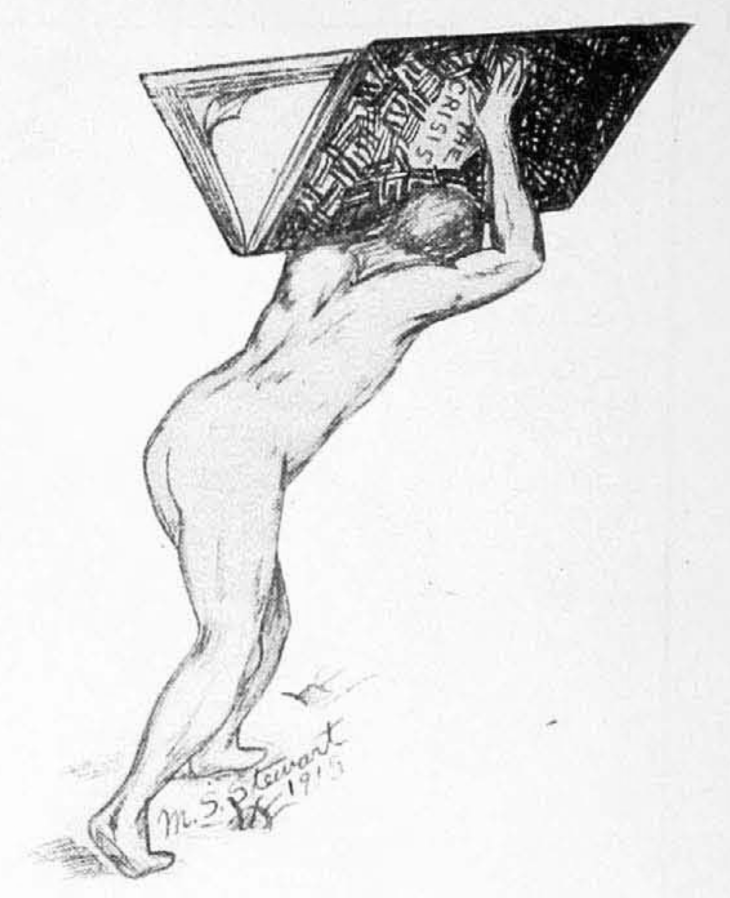

The Immediate Program of the American Negro
The immediate program of the American Negro means nothing unless it is mediate to his great ideal and the ultimate ends of his development. We need not waste time by seeking to deceive our enemies into thinking that we are going to be content with a half loaf, or by being willing to lull our friends into a false sense of our indifference and present satisfaction.

The American Negro demands equality—political equality, industrial equality and social equality; and he is never going to rest satisfied with anything less. He demands this in no spirit of braggadocio and with no obsequious envy of others, but as an absolute measure of self-defense and the only one that will assure to the darker races their ultimate survival on earth.
Only in a demand and a persistent demand for essential equality in the modern realm of human culture can any people show a real pride of race and a decent self-respect. For any group, nation or race to admit for a moment the present monstrous demand of the white race to be the inheritors of the earth, the arbiters of mankind and the sole owners of a heritage of culture which they did not create, nor even improve to any greater extent than the other great division of men—to admit such pretense for a moment is for the race to write itself down immediately as indisputably inferior in judgment, knowledge and common sense.
The equality in political, industrial and social life which modern men must have in order to live, is not to be confounded with sameness. On the contrary, in our case, it is rather insistence upon the right of diversity;—upon the right of a human being to be a man even if he does not wear the same cut of vest, the same curl of hair or the same color of skin. Human equality does not even entail, as is sometimes said, absolute equality of opportunity; for certainly the natural inequalities of inherent genius and varying gift make this a dubious phase. But there is a more and more clearly recognized minimum of opportunity and maximum of freedom to be, to move and to think, which the modern world denies to no being which it recognizes as a real man.
These involve both negative and positive sides. They call for freedom on the one hand and power on the other. The Negro must have political freedom; taxation without representation is tyranny. American Negroes of to-day are ruled by tyrants who take what they please in taxes and give what they please in law and administration, in justice and in injustice; and the great mass of black people must stand helpless and voiceless before a condition which has time and time again caused other peoples to fight and die.
The Negro must have industrial freedom. Between the peonage of the rural South, the oppression of shrewd capitalists and the jealousy of certain trade unions, the Negro laborer is the most exploited class in the country, giving more hard toil for less money than any other American, and have less voice in the conditions of his labor.
In social intercourse every effort is being made to-day from the President of the United States and the so-called Church of Christ down to saloons and boot-blacks to segregate, strangle and spiritually starve Negroes so as to give them the least possible chance to know and share civilization.
These shackles must go. But that is but the beginning. The Negro must have power; the power of men, the right to do, to know, to feel and to express that knowledge, action and spiritual gift. He must not simply be free from the political tyranny of white folk, he must have the right to vote and to rule over the citizens, white and black, to the extent of his proven foresight and ability. He must have a voice in the new industrial democracy which is building and the power to see to it that his children are not in the next generation trained to be the mudsills of society. He must have the right to social intercourse with his fellows. There was a time in the atomic individualistic group when “social intercourse’ meant merely calls and tea-parties; to-day social intercourse means theatres, lectures, organizations, churches, clubs, excursions, travel, hotels,—it means in short Life; to bar a group from such methods of thinking, living and doing is to bar them from the world and bid them create a new world;—a task to which no single group is today equal; it is to crucify them and taunt them with not being able to live.
What now are the practical steps which must be taken to accomplish these ends?
First of all before taking steps the wise man knows the object and end of his journey. There are those who would advise the black man to pay little or no attention to where he is going so long as he keeps moving. They assume that God or his vice-gerent the White Man will attend to the steering. This is arrant nonsense. The feet of those that aimlessly wander land as often in hell as in heaven. Conscious self-realization and self-direction is the watchword of modern man, and the first article in the program of any group that will survive must be the great aim, equality and power among men.
The practical steps to this are clear. First we must fight obstructions; by continual and increasing effort we must first make American courts either build up a body of decisions which will protect the plain legal rights of American citizens or else make them tear down the civil and political rights of all citizens in order to oppress a few. Either result will bring justice in the end. It is lots of fun and most ingenious just now for courts to twist law so as to say I shall not live here or vote there, or marry the woman who wishes to marry me. But when to-morrow these decisions throttle all freedom and overthrow the foundation of democracy and decency, there is going to be some judicial house cleaning.
We must secondly seek in legislature and congress remedial legislation; national aid to public school education, the removal of all legal discriminations based simply on race and color, and those marriage laws passed to make the seduction of black girls easy and without legal penalty.
Third the human contact of human beings must be increased; the policy which brings into sympathetic touch and understanding, men and women, rich and poor, capitalist and laborer, Asiatic and European, must bring into closer contact and mutual knowledge the white and black people of this land. It is the most frightful indictment of a country which dares to call itself civilized that it has allowed itself to drift into a state of ignorance where ten million people are coming to believe that all white people are liars and thieves, and the whites in turn to believe that the chief industry of Negroes is raping white women.
Fourth only the publication of the truth repeatedly and incisively and uncompromisingly can secure that change in public opinion which will correct these awful lies. The Crisis, our record of the darker races, must have a circulation not of 35,000 chiefly among colored folk but of at least 250,000 among all men who believe in men. It must not be a namby-pamby box of salve, but a voice that thunders fact and is more anxious to be true than pleasing. There should be a campaign of tract distribution—short well written facts and arguments—rained over this land by millions of copies, particularly in the South, where the white people know less about the Negro than in any other part of the civilized world. The press should be utilized—the 400 Negro weeklies, the great dailies and eventually the magazines, when we get magazine editors who will lead public opinion instead of following afar with resonant brays. Lectures, lantern-slides and moving pictures, co-operating with a bureau of information and eventually becoming a Negro encyclopedia, all these are efforts along the line of making human beings realize that Negroes are human.
Such is the program of work against obstructions. Let us now turn to constructive effort. This may be summed up under (1) economic co-operation (2) a revival of art and literature (3) political action (4) education and (5) organization.
Under economic co-operation we must strive to spread the idea among colored people that the accumulation of wealth is for social rather than individual ends. We must avoid, in the advancement of the Negro race, the mistakes of ruthless exploitation which have marked modern economic history. To this end we must seek not simply home ownership, small landholding and saving accounts, but also all forms of co-operation, both in production and distribution, profit sharing, building and loan associations, systematic charity for definite, practical ends, systematic migration from mob rule and robbery, to freedom and enfranchisement, the emancipation of women and the abolition of child labor.
In art and literature we should try to loose the tremendous emotional wealth of the Negro and the dramatic strength of his problems through writing, the stage, pageantry and other forms of art. We should resurrect forgotten ancient Negro art and history, and we should set the black man before the world as both a creative artist and a strong subject for artistic treatment.
In political action we should organize the votes of Negroes in such congressional districts as have any number of Negro voters. We should systematically interrogate candidates on matters vital to Negro freedom and uplift. We should train colored voters to reject the bribe of office and to accept only decent legal enactments both for their own uplift and for the uplift of laboring classes of all races and both sexes.
In education we must seek to give colored children free public school training. We must watch with grave suspicion the attempt of those who, under the guise of vocational training, would fasten ignorance and menial service on the Negro for another generation. Our children must not in large numbers, be forced into the servant class; for menial service is still, in the main, little more than an antiquated survival of impossible conditions. It has always been as statistics show, a main cause of bastardy and prostitution and despite its many marvelous exceptions it will never come to the light of decency and honor until the house servant becomes the Servant in the House. It is our duty then, not drastically but persistently, to seek out colored children of ability and genius, to open up to them broader, industrial opportunity and above all, to find that Talented Tenth and encourage it by the best and most exhaustive training in order to supply the Negro race and the world with leaders, thinkers and artists.
For the accomplishment of all these ends we must organize. Organization among us already has gone far but it must go much further and higher. Organization is sacrifice. It is sacrifice of opinions, of time, of work and of money, but it is, after all, the cheapest way of buying the most priceless of gifts—freedom and efficiency. I thank God that most of the money that supports the National Association for the Advancement of Colored People comes from black hands; a still larger proportion must so come, and we must not only support but control this and similar organizations and hold them unwaveringly to our objects, our aims and our ideals.
Citation: Du Bois, W.E.B. 1915. “The Immediate Program of the American Negro.” The Crisis. 9(6):310–312.